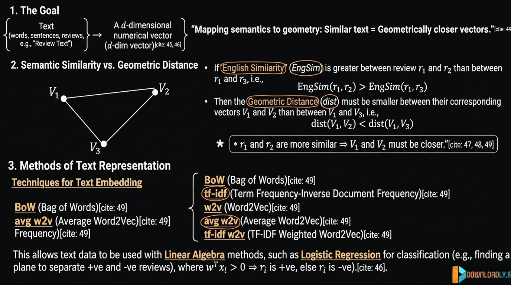
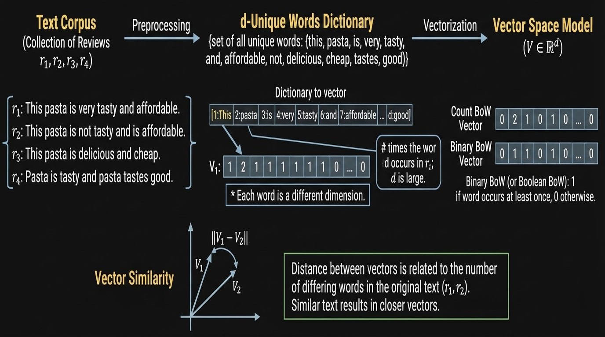
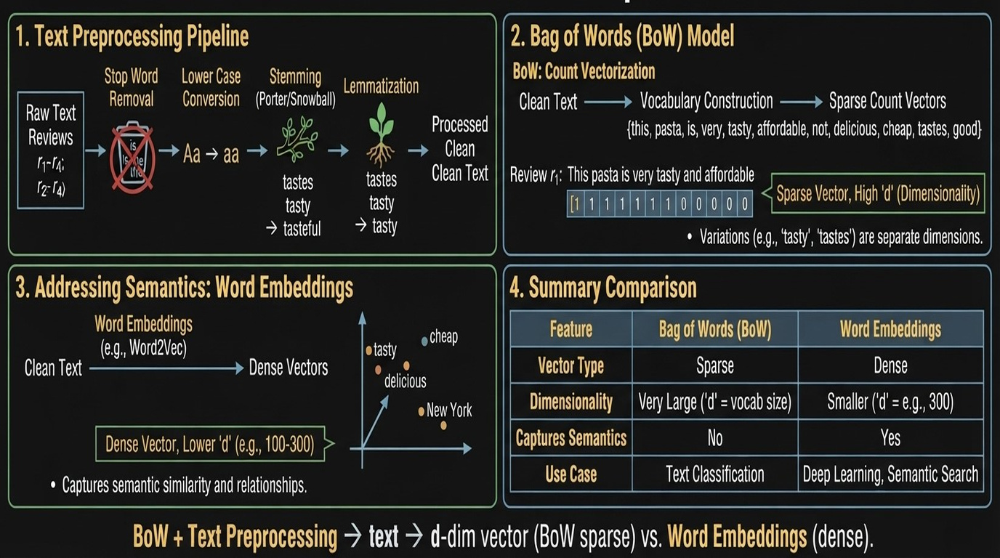
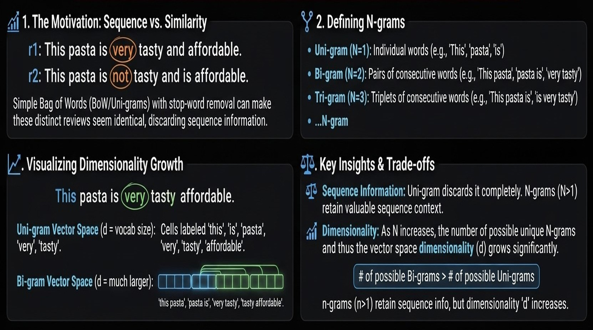
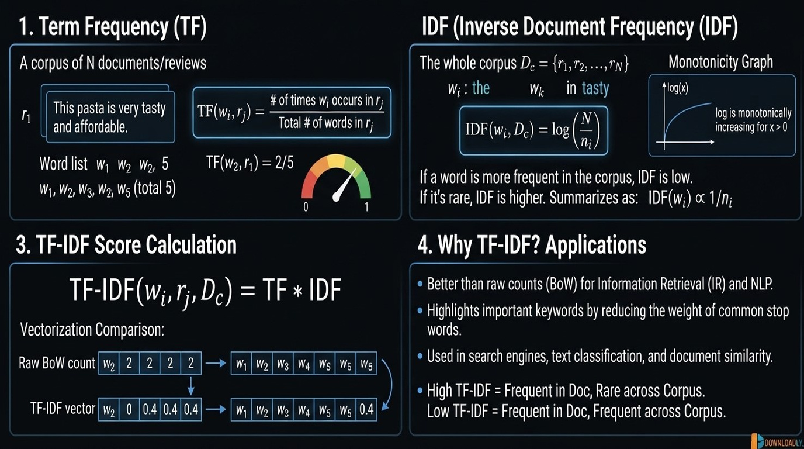
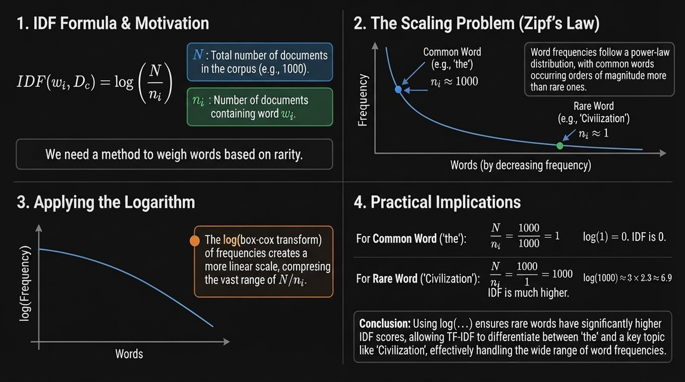
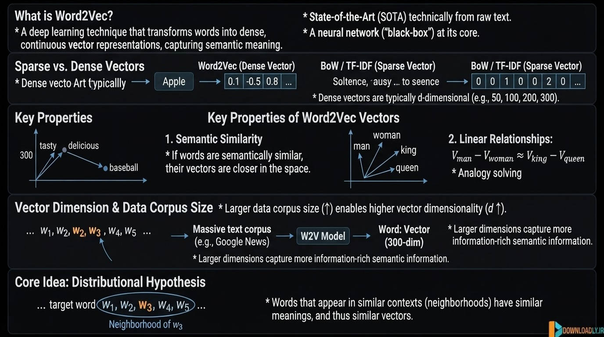
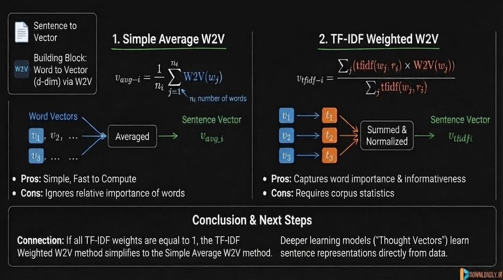
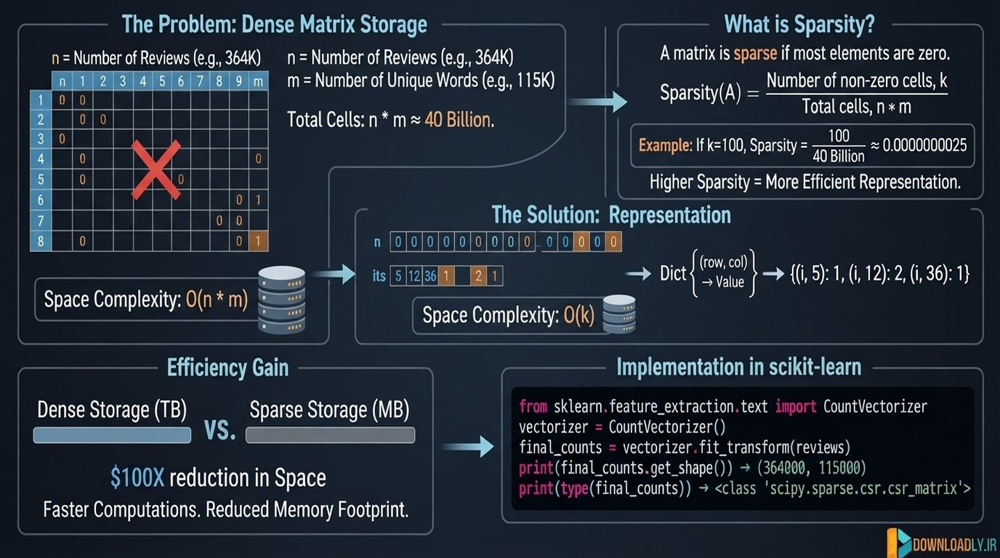

Data Processing
01. Dataset Overview Amazon Fine Food Reviews (EDA)
02. Data Cleaning Deduplication
03. Why Convert Text to a Vector

Text to Vector
Why do we need Text to Vector?
Machine Learning models (including Logistic Regression, etc.) work with numerical vectors, not with raw text.
We need a way to convert English text (words and sentences) into d-dimensional numerical vectors.
$$ \text{Review text} \quad \longrightarrow \quad d\text{-dimensional vector} $$
Geometric Meaning
Once we convert text into vectors, we can use ideas from Linear Algebra:
- Points in $d$-dimensional space
- Planes / hyperplanes to separate classes (e.g. positive vs negative reviews)
- Distance and similarity between vectors
Example (Sentiment Classification):
- Positive reviews and negative reviews become two groups of points in $d$-dimensional space
- We try to find a hyperplane (defined by a weight vector $w$) that separates them
Decision rule:
$$ \begin{cases} w^T x_i > 0 & \Rightarrow \text{positive review} \ w^T x_i < 0 & \Rightarrow \text{negative review} \end{cases} $$
Important Requirement
If two texts are semantically similar, then their corresponding vectors should be geometrically close.
$$ \text{If } \text{EngSim}(r_1, r_2) > \text{EngSim}(r_1, r_3) $$
then
$$ \text{dist}(v_1, v_2) < \text{dist}(v_1, v_3) $$
Common Techniques to Convert Text → Vector
- Bag of Words (BoW)
- TF-IDF
- Word2Vec (W2V)
- Average Word2Vec
- TF-IDF weighted Word2Vec
These methods try to create vector representations such that similar texts end up close to each other in the vector space.
04. Bag of Words (BoW)

Bag of Words is one of the simplest methods to convert text into numerical vectors.
Step 1: Create the Dictionary (Vocabulary)
Collect all unique words from the entire corpus (all reviews).
Example corpus:
- $r_1$: This pasta is very tasty and affordable
- $r_2$: This pasta is not tasty and is affordable
- $r_3$: This pasta is delicious and cheap
- $r_4$: Pasta is tasty and pasta tastes good
Dictionary = set of all unique words
$$
{\text{this, pasta, is, very, tasty, and, affordable, not, delicious, cheap, tastes, good, ...}}
$$
Let the number of unique words be $d$.
Each review will be converted into a $d$-dimensional vector.
Step 2: Convert each review into a vector
For a review $r_i$, the corresponding vector $v_i$ is created as follows:
- Each dimension corresponds to one word in the dictionary
- The value in that dimension = number of times the word occurs in the review
Example:
Review: “This pasta is very tasty and affordable”
$$ v_1 = [0, 0, 1, 1, 1, 1, \dots] $$
(Most of the entries are zero → sparse vector)
Important Property
BoW should satisfy:
Similar texts must result in closer vectors.
Binary / Boolean Bag of Words
Instead of counting the number of occurrences, we can just store:
- 1 → if the word occurs at least once
- 0 → otherwise
This is called Binary BoW or Boolean BoW.
In Binary BoW, the Euclidean distance between two vectors is related to the number of differing words:
$$ |v_1 - v_2| = \sqrt{\text{number of differing words between } r_1 \text{ and } r_2} $$
Summary
| Type | Value stored in each dimension | Nature of vector |
|---|---|---|
| Normal BoW | Count of the word | Sparse |
| Binary BoW | 1 if word present, else 0 | Sparse |
BoW is simple and effective, but it ignores the order of words and semantic meaning.
05. Stop-word removal, Tokenization, Lemmatization
Featurizations - convert text to numeric vectors
Before converting text into BoW vectors, we apply several preprocessing steps to make the vectors smaller and more meaningful.

1. Removing Stopwords
Stopwords are common words that carry very little meaning (e.g. “this”, “is”, “and”, “the”, “very”).
Example:
- Original: “This pasta is very tasty and affordable”
- After removing stopwords: “pasta tasty affordable”
Removing stopwords reduces the dimension of the BoW vectors and keeps only the more informative words.
2. Lowercasing
Convert all letters to small letters so that “Pasta” and “pasta” are treated as the same word.
3. Stemming
Stemming reduces words to their root form by chopping off prefixes/suffixes.
Common stemmers:
- Porter Stemmer
- Snowball Stemmer
Examples:
- tastes, tasty, tasteful → tast
- beautiful, beauty → beauti
4. Lemmatization
Lemmatization also reduces words to their base form, but it is smarter than stemming because it uses vocabulary and morphological analysis.
It produces actual meaningful words (lemmas).
Note: Lemmatization is usually preferred over stemming when we care about readability.
Why do we do Text Preprocessing?
- Reduces the size of the vocabulary ($d$ becomes smaller)
- Makes BoW vectors more meaningful
- Groups similar words together (e.g. “tasty”, “tasteful”, “tastes”)
Limitation of BoW + Preprocessing
Even after preprocessing, BoW still cannot capture semantic similarity properly.
Example:
- “tasty” and “delicious” are very similar in meaning
- But in BoW they are treated as completely different dimensions
This is why we later use more advanced techniques such as Word2Vec, which can capture semantic meaning of words.
3. Limitations of BoW
- BoW only counts word frequency.
- It does not understand that “tasty” and “delicious” have very similar meaning.
- Result: Two sentences with similar meaning can have very different BoW vectors.
4. Solution: Word2Vec
- Word2Vec learns dense vector representations that capture semantic meaning.
- Words with similar meaning (e.g., tasty ↔ delicious) get similar vectors.
- Combined with text preprocessing, we can convert text into meaningful dense vectors.
Summary
| Technique | Captures Semantics? | Output |
|---|---|---|
| BoW | No | Sparse high-dimensional vector |
| BoW + Preprocessing | Partially | Smaller sparse vector |
| Word2Vec | Yes | Dense low-dimensional vector |
06. Uni-Gram, Bi-Gram, N-Grams

Problem with basic BoW (Uni-gram)
In standard Bag of Words we treat each single word as a dimension (Uni-gram).
Example:
- $r_1$: This pasta is very tasty and affordable
- $r_2$: This pasta is not tasty and is affordable
After removing stopwords, both reviews contain the words “pasta”, “tasty”, “affordable”.
BoW will conclude that $r_1$ and $r_2$ are very similar — but they actually have opposite meanings because of the word “not”.
Uni-gram BoW discards the sequence information.
Bi-grams
A Bi-gram is a pair of consecutive words.
Instead of taking single words as dimensions, we take pairs of consecutive words.
Example Bi-grams from $r_1$:
- “very tasty”
- “tasty and”
- “and affordable”
Example Bi-grams from $r_2$:
- “not tasty”
- “tasty and”
- “and is”
Now “very tasty” and “not tasty” become different dimensions, so the two reviews will no longer look identical.
n-grams
Generalization:
| n | Name | Meaning |
|---|---|---|
| n = 1 | Uni-gram | Single words |
| n = 2 | Bi-gram | Pairs of consecutive words |
| n = 3 | Tri-gram | Three consecutive words |
| n | n-gram | n consecutive words |
Key Points
- Uni-gram BoW discards sequence information
- Bi-grams and higher n-grams retain some sequence information
- As $n$ increases, the number of possible n-grams grows very fast
- Therefore the dimensionality $d$ of the vector also increases significantly
$$ \text{Number of bi-grams} > \text{Number of uni-grams} $$
$$ \text{Number of tri-grams} > \text{Number of bi-grams} $$
$$ \text{Number of n-grams} >\text{Number of tri-grams} > \text{Number of bi-grams} > \text{Number of uni-grams} $$
Using n-grams (especially bi-grams) helps BoW capture local word order and improves performance on many text classification tasks.
07. TF-IDF (Term Frequency-Inverse Document Frequency)
TF-IDF is a popular technique to convert text into numerical vectors.
It improves upon simple Bag of Words by giving more importance to important words and less importance to common words.

1. Term Frequency (TF)
Definition:
$$ TF(w_i, r_j) = \dfrac{\text{Number of times } w_i \text{ occurs in review } r_j}{\text{Total number of words in review } r_j} $$
Properties:
- $0 \le TF(w_i, r_j) \le 1$
- It can be interpreted as a probability
Example:
Review $r_1$: $w_1, w_2, w_3, w_2, w_5$ (total 5 words)
$$ TF(w_2, r_1) = \dfrac{2}{5} $$
2. Inverse Document Frequency (IDF)
Definition:
$$ IDF(w_i, D_c) = \log \left( \dfrac{N}{n_i} \right) $$
where:
- $N$ = total number of documents (reviews) in the corpus $D_c$
- $n_i$ = number of documents that contain the word $w_i$
Properties:
- $IDF(w_i, D_c) \ge 0$
- If a word appears in all documents → $n_i = N$ → $IDF = \log(1) = 0$
- If a word is rare → $n_i$ is small → $IDF$ becomes large
Key Intuition:
- Frequent words in the corpus (e.g. “the”, “is”) get low IDF
- Rare words get high IDF
IDF is a monotonically decreasing function of $n_i$.
3. TF-IDF Value
For a word $w_i$ in a review $r_j$:
$$ TF\text{-}IDF(w_i, r_j) = TF(w_i, r_j) \times IDF(w_i, D_c) $$
How TF-IDF Vectors are Formed
Each review $r_j$ is converted into a vector $v_j$ where the value in the dimension corresponding to word $w_i$ is:
$$ v_j[i] = TF(w_i, r_j) \times IDF(w_i, D_c) $$
Why TF-IDF is Better than BoW
| Aspect | Bag of Words | TF-IDF |
|---|---|---|
| Common words (e.g. “the”) | High values | Low values (low IDF) |
| Rare but important words | Same as common words | High values (high IDF) |
| Importance of a word | Only based on count | Based on count + rarity |
TF-IDF gives:
- More importance to words that are frequent in a particular document
- More importance to words that are rare in the entire corpus
Limitation
TF-IDF still does not capture semantic meaning.
Example:
- “tasty” and “delicious” are similar in meaning
- But TF-IDF treats them as completely different dimensions
This limitation is later addressed by techniques like Word2Vec.
08. Why Use Log in IDF

Why do we use $\log\left(\dfrac{N}{n_i}\right)$ for IDF?
Definition Recap
$$ IDF(w_i, D_c) = \log\left(\dfrac{N}{n_i}\right) $$
- $N$ = total number of documents
- $n_i$ = number of documents containing the word $w_i$
Why logarithm?
Using the raw value $\dfrac{N}{n_i}$ can produce extremely large numbers for rare words, which can dominate the TF-IDF values.
Taking $\log$ has two practical benefits:
- It compresses the range of values.
- It still preserves the ranking (monotonic transformation).
Connection to Zipf’s Law
Word frequencies in natural language follow Zipf’s Law (a power-law distribution):
- A few words (the, is, and, …) occur extremely frequently
- Most words occur very rarely
If we plot word frequency (sorted in decreasing order), we get a power-law curve.
Taking $\log$ of the frequencies makes the distribution much better behaved (closer to linear / easier to work with).
This is similar to the idea of using log or Box-Cox transforms for power-law / log-normal data.
Practical Example
Suppose $N = 1000$ documents:
| Word | $n_i$ | $\dfrac{N}{n_i}$ | $\log\left(\dfrac{N}{n_i}\right)$ |
|---|---|---|---|
| the | 1000 | 1 | 0 |
| is | 1000 | 1 | 0 |
| civilization | 1 | 1000 | ≈ 6.9 |
Without log, the rare word “civilization” would get a value of 1000, which can completely dominate the vector.
With log, the value becomes a more reasonable ≈ 6.9.
Summary
- Using $\log\left(\dfrac{N}{n_i}\right)$ is a heuristic (from a 1972 research paper)
- It is not strongly based on theory, but works very well in practice
- It prevents rare words from dominating the TF-IDF vectors
- It is connected to the fact that word frequencies follow Zipf’s law (power-law distribution)
09. Word2Vec
https://www.tensorflow.org/text/tutorials/word2vec

Introduction
Word2Vec is a state-of-the-art technique (introduced around 2013) that converts words into dense numerical vectors while capturing semantic meaning.
Unlike BoW and TF-IDF (which produce sparse vectors and ignore semantics), Word2Vec produces dense, low-dimensional vectors that understand relationships between words.
Key Properties of Word2Vec
Dense Vectors
- Typical dimensions: 50, 100, 200, 300
- Not sparse (most values are non-zero)
Semantic Similarity
- If two words are semantically similar, their vectors will be close in the vector space.
- Example: “tasty” and “delicious” will have nearby vectors, while “baseball” will be far away.
Relationships / Analogies
- Word2Vec can capture relationships such as:
$$ v_{\text{man}} - v_{\text{woman}} \approx v_{\text{king}} - v_{\text{queen}} $$
How it Works (High-level Idea)
Word2Vec learns relationships automatically from a large text corpus (no manual feature engineering).
Core Intuition:
- Words that appear in similar neighborhoods (contexts) should have similar vectors.
$$ \text{If } N(w_i) \approx N(w_j) \quad \Rightarrow \quad v_i \approx v_j $$
Training Data
- Trained on very large text corpora (e.g. Google News)
- Larger corpus → better quality vectors
- Larger dimensions → more information-rich vectors (but more computation)
Comparison with Previous Methods
| Method | Vector Type | Captures Semantics? | Dimensionality |
|---|---|---|---|
| BoW | Sparse | No | Very high (vocab size) |
| TF-IDF | Sparse | No | Very high (vocab size) |
| Word2Vec | Dense | Yes | Low (50–300) |
Note
Internally, Word2Vec can be understood as a form of matrix factorization or a shallow neural network (we will treat the internal working as a black-box for now).
10. Avg-Word2Vec, TF-IDF Weighted Word2Vec
Word2Vec gives us a dense vector for each word.
But in practice we need a vector for a whole sentence / review.

Two simple and popular ways to create sentence vectors using Word2Vec are:
1. Average Word2Vec (Avg-W2V)
Idea: Take the average of all word vectors in the sentence.
Given a review:
$$ r_1 = w_1, w_2, w_1, w_3, w_4, w_5 $$
(with $n_1$ words)
$$ v_1 = \dfrac{1}{n_1} \Big[ W2V(w_1) + W2V(w_2) + W2V(w_1) + \dots + W2V(w_5) \Big] $$
Properties:
- Very simple
- Works reasonably well in practice
- Not perfect, but a strong baseline
2. TF-IDF Weighted Word2Vec (TF-IDF-W2V)
Idea: Instead of simple averaging, take a weighted average where the weights are the TF-IDF values of the words.
$$ \text{TF-IDF-W2V}(r_1) = \dfrac{\sum_{i} \big( t_i \cdot W2V(w_i) \big)}{\sum_{i} t_i} $$
where $t_i = \text{TF-IDF}(w_i, r_1)$
Special Case:
- If all $t_i = 1$, then TF-IDF-W2V becomes exactly the same as Average Word2Vec.
Summary
| Method | How sentence vector is created | Notes |
|---|---|---|
| Average W2V | Simple average of word vectors | Simple & effective baseline |
| TF-IDF weighted W2V | Weighted average using TF-IDF scores | Gives more importance to important words |
Both methods are weighting schemes to convert a sequence of word vectors into a single sentence vector.
These techniques are simple ways to leverage Word2Vec for sentence-level representations (also called Sent2Vec style approaches). More advanced methods later use deep learning to create better sentence embeddings (Thought Vectors, etc.).
11. Bag of Words (Code Sample)

What is a Sparse Matrix?
A matrix $A$ of size $n \times m$ is called sparse if most of its elements are zero.
$$ A \in \mathbb{R}^{n \times m} $$
- Total number of cells = $n \times m$
- Space required if stored normally = $O(n \times m)$
Why Sparse Matrices appear in NLP (BoW)
In Bag of Words:
- $n$ = number of reviews / documents (e.g. 364K)
- $m$ = number of unique words in the vocabulary (e.g. 115K)
So the BoW matrix is of size:
$$ 364K \times 115K $$
Each row $r_i$ is a sparse vector because a single review contains only a few words, while the vocabulary is very large.
Most of the values in any row $r_i$ are zero.
Efficient Representation of Sparse Matrices
Instead of storing all $n \times m$ values, we store only the non-zero entries.
One common way is to use a Dictionary (or list of triples):
For each non-zero cell we store:
$$ (\text{row index},; \text{column index},; \text{value}) $$
Space complexity:
- Normal storage: $O(m)$ per row
- Sparse storage: $O(k)$ where $k$ = number of non-zero cells
Sparsity of a Matrix
$$ \text{Sparsity of } A = \dfrac{k}{n \times m} $$
where $k$ = number of non-zero cells.
The more sparse a matrix is, the more efficient sparse-matrix representations become.
Code Explanation (Bag of Words using scikit-learn)
# BoW
count_vect = CountVectorizer() # Create a CountVectorizer object
count_vect.fit(preprocessed_reviews) # Learn the vocabulary from the reviews
print("Some Feature names ", count_vect.get_feature_names_out()[:10])
print('='*50)
final_counts = count_vect.transform(preprocessed_reviews) # Convert reviews into BoW matrix
print("the type of count vectorizer ", type(final_counts))
print("the shape of out text BOW vectorizer ", final_counts.get_shape())
print("the number of unique words ", final_counts.get_shape()[1])
Line-by-line explanation:
| Code | Meaning |
|---|---|
CountVectorizer() |
Creates a Bag-of-Words vectorizer from scikit-learn |
.fit(preprocessed_reviews) |
Learns the vocabulary (all unique words) from the given reviews |
.get_feature_names_out()[:10] |
Shows the first 10 words in the learned vocabulary |
.transform(preprocessed_reviews) |
Converts each review into a BoW vector (count of each word) |
type(final_counts) |
Shows that the result is a sparse matrix (not a normal dense NumPy array) |
final_counts.get_shape() |
Returns (number of reviews, number of unique words) |
final_counts.get_shape()[1] |
Gives the size of the vocabulary (number of unique words) |
Key Point:
final_counts is stored as a sparse matrix (usually CSR format) because most of the entries are zero. This saves a huge amount of memory compared to a dense matrix.
12. Text Preprocessing (Code Sample)
See Lecture.ipynb
13. Bi-Grams and N-Grams (Code Sample)
See Lecture.ipynb
14. TF-IDF (Code Sample)
See Lecture.ipynb
15. Word2Vec (Code Sample)
See Lecture.ipynb
16. Avg-Word2Vec and TFIDF-Word2Vec (Code Sample)
See Lecture.ipynb